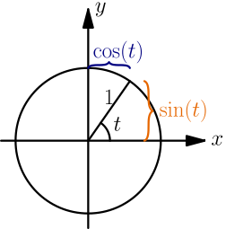

Common Graphs¶
This page contains a bunch of graphs and some awesome graph drawing demos made by a friend of mine.
Lines¶
The equation of any (non-vertical) line is $y=sx+c$. Here $s$ and $c$ are constants, and $s$ is called the slope. Try at least these things with the below demo program:
- What does changing the slope and the constant term do?
- What if the slope or the constant term is zero?
- What if the slope or the constant term is negative?
See Also
The derivative tutorial contains more information about slopes.

Parabolas¶
The "tip" of a parabola is known as the vertex. See the image at right.
The equation of any parabola that opens up or down is $y=a\cdot(x-v)^2+w$ where $a$, $v$ and $w$ are constants. The $x$ coordinate of the vertex is $v$ and the $y$ coordinate is $w$. Note that $a \ne 0$ because $y=w$ is a horizontal line.
Handy thing: $(x-v)^2=x^2-2vx+v^2$
Proof:
$$\begin{align}& \ (x-v)^2 \\ =&\ (x-v)(x-v) \\ =&\ (x-v)x-(x-v)v \\ =&\ (xx-vx)-(xv-vv) \\ =&\ xx-vx-xv+vv \\ =&\ xx-(vx+vx)+vv \\ =&\ x^2-2vx+v^2\end{align}$$The $y=a(x-v)^2+w$ form is nice because it's easy to see where the vertex is, but let's see what happens if we expand that a bit:
$$\begin{align}y &= a\cdot(x-v)^2+w \\ &= a\cdot(x^2-2vx+v^2)+w \\ &= ax^2-2avx+av^2+w\end{align}$$Now if we set $b=-2av$ and $c=av^2+w$, then $b$ and $c$ are also because they don't depend on the value of $x$. We get this:
$$\begin{align}y = ax^2+bx+c\end{align}$$Equations of all parabolas that open up or down are like this. Again, $a \ne 0$ because $y=bx+c$ is a straight line.
Exercise
What is the $x$ coordinate of the vertex of a $y=ax^2+bx+c$ parabola? Check your answer with a derivative like $\frac{d}{dx}(ax^2+bx+c)=0$.
Spoiler: above we set $b=-2av$.
Exponents and Logarithms¶
All of these graphs have an area where they get closer and closer to an axis but they never touch it. For example, if $a>0$ then $a^x=0$ with no $x$, even though $\displaystyle\lim_{x\to-\infty}a^x=0$ if $a>1$ and $\displaystyle\lim_{x\to\infty}a^x=0$ if $0< a<1$.
There's a detailed introduction to exponents and logarithms here.


Sine and Cosine¶
See this thing if you don't know what $\tau$ and radians are, and this thing for a more detailed introduction to $\sin$, $\cos$ and the unit circle. Note that the graphs have a $t$ axis instead of an $x$ axis, and that $t$ is the same as the $t$ in the unit circle as radians.
